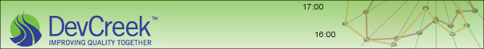
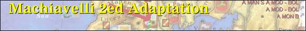
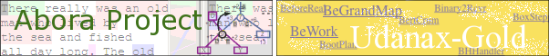
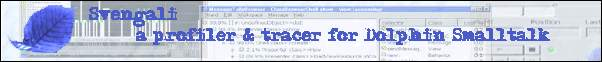
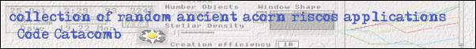

<div class="slab">
<a
					 href="http://devcreek.com"></a>
</div>
<div class="slab">
<a
					 href="machintro/index.html"></a> 
</div>
<div class="slab">					 
						 
						 <map name="map1">
							 <area shape="rect" coords="0,0,300,62"
							 href="abora_hypertext" title="Abora">
							 <area shape="rect" coords="302,0,602,62"
							 href="abora_hypertext" title="Udanax-Gold">
						 </map>
</div>
<div class="slab">
<a href="svengali/index.htm"></a>
</div>
<div class="slab">
					 
					 <a href="codecat/index.htm"></a>
</div>
<div class="slab" style="width: 602px; border: thin; height: 62px;">					 
					 <span style="vertical-align: middle; background-color: Cornsilk; height: 62px; width:"><a href="dolphin/index.html">SourceDocumenter</a></span>
</div>

